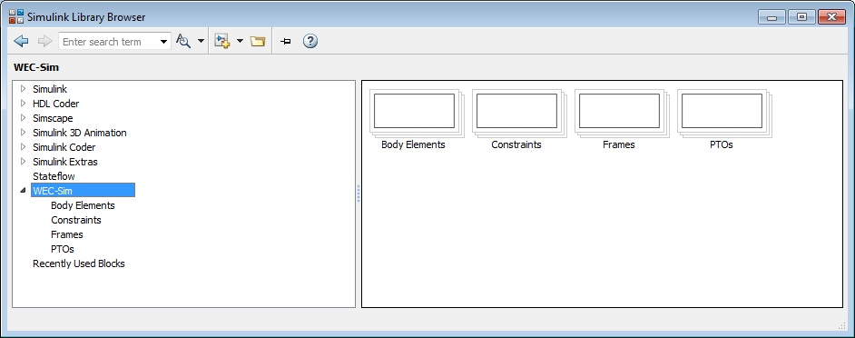

Getting Started¶
This section provides instructions on how to download and install the WEC-Sim code.
MATLAB Toolbox Requirements¶
WEC-Sim was developed in MATLAB R2015b, and requires the following toolboxes:
Required Toolbox Supported Version MATLAB Version 8.6 (R2015b) Simulink Version 8.6 (R2015b) Simscape Version 3.14 (R2015b) SimMechanics Version 4.7 (R2015b) Ensure that the correct version of MATLAB and the required toolboxes are installed by typing
verin the MATLAB Command Window:>> ver -------------------------------------------------------------------------------------- MATLAB Version: 8.6.0.267246 (R2015b) -------------------------------------------------------------------------------------- MATLAB Version 8.6 (R2015b) Simulink Version 8.6 (R2015b) SimMechanics Version 4.7 (R2015b) Simscape Version 3.14 (R2015b)Note
SimMechanics is now called Simscape Multibody in R2016a
Download WEC-Sim¶
There are three ways of obtaining the WEC-Sim code which is distributed through the WEC-Sim GitHub repository:
Option 1. Clone with GitHub (Recommended for Users)¶
WEC-Sim can be obtained by locally cloning the repository hosted on GitHub using the shell:
>> git clone https://github.com/WEC-Sim/WEC-SimThis method is recommended for users because the local copy of WEC-Sim can easily be updated to the latest version of the code hosted on the GitHub repository by using the pull command:
>> git pull
Option 2. Fork with Git (Recommended for Developers)¶
If you plan to contribute to the WEC-Sim code, please follow the forking instructions provided by GitHub. Should you make improvements to the code that you would like included in the WEC-Sim master code, please submit a pull request. This pull request will then be reviewed, merged into WEC-Sim master, and included in future WEC-Sim releases.
Option 3. Static Code Download (Not Recommended)¶
The easiest way to obtain a copy of WEC-Sim is to download the latest WEC-Sim Release.
Note
This is a static download of the WEC-Sim code. If you choose this method, you will have to re-download the code in order to receive code updates.
Install WEC-Sim¶
Once you have downloaded the WEC-Sim source code, take the following steps to install the WEC-Sim code:
Step 1. Add WEC-Sim Source Code to MATLAB Path¶
Open the
$wecSim/wecSimStartup.mfile ($wecSim refers to WEC-Sim source code directory).% Set the wecSimPath variable to the location of the WEC-Sim source directory % Copy the code in this file and place it in your'startup.m' file wecSimPath = <wecSim>; addpath(genpath(wecSimPath));Copy the code in the
wecSimStartup.mshown above and paste it into thestartup.mfile located in the MATLAB Startup Folder. Set thewecSimPathvariable to the$wecSimfolder and open thestartup.mfile by typingopen startup.minto the MATLAB Command Window:>> open startup.mVerify the path was set up correctly by checking that the WEC-Sim source directory (
$wecSim) is listed in the MATLAB. This is done by typingpathinto the MATLAB Command Window:>> path
Step 2. Add WEC-Sim Library to Simulink¶
Open the Simulink Library Browser by typing
slLibraryBrowserinto the MATLAB Command Window:>> slLibraryBrowserOnce the Simulink Library Browser opens, refresh the Simulink Library. The WEC-Sim Library (Body Elements, Constraints, Frames Moorings, and PTOs) should now be visible, as shown in the figure below. The WEC-Sim Library should now be accessible every time Simulink is opened. For more information on using and modifying library blocks refer to the Simulink Documentation.
WEC-Sim Library